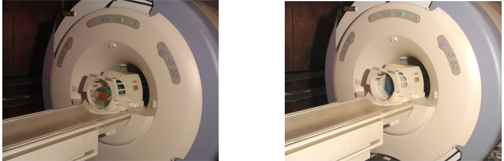
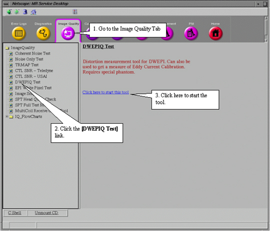
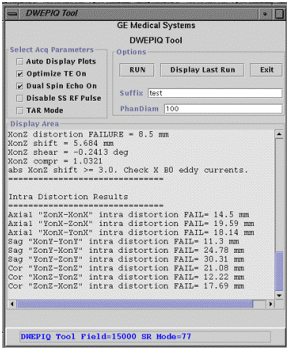

Proprietary to General Electric Company
Direction 5440000, Rev# 5
Signa HDxt Service Methods
Module Version 1.0, Version Date 4/26/07
Proprietary to General Electric Company |
| Required Persons | Preliminary Reqs | Procedure | Finalization |
|---|---|---|---|
| 1 | Not Applicable | 30 mins | Not Applicable |
The DWEPIQ tool is used to quantitatively measure geometric distortions in Diffusion Weighted Echo Planar Imaging (DWEPI). This tool will allow systems with the DWEPI Option to quantitatively measure the effects of residual eddy currents induced by the diffusion gradients (B0, on-axis, and cross terms) and the corresponding geometric distortions and magnitude reductions.
| NOTE: | For the TwinSpeed, both gradient coils can be checked. Each GradMode is tested separately. |
| NOTE: | The DWEPIQ kit (with the 100mm phantom) is not shipped standard with the system (Unless it is the Eclipse). Customers need to order the Single Shot EPI Diffusion option –MCAT number M2090DE to do DWEPIQ for non-Eclipse systems. |
| Last Update | 02/15/2006 |
| Item | Qty | Effectivity | Part# | Manufacturer | |
|---|---|---|---|---|---|
| One of Either Liquid Silicon Phantom: | 1 | To be used both for 1.5T and 3.0T | - | - | |
| Composed of : | |||||
| 100-mm SF9650 (Clear Color) Liquid Silicon Sphere Phantom (100mm phantom) | 1 | - | 2258366 | - | |
| 170-mm SF9650 Liquid Silicon Sphere Phantom (part of the Eclipse system) | - | 2258364 (170 mm phantom) | - | ||
| TLT Head Loader | 1 | - | 2360031 | - | |
| EPI Head Loader Positioner | 1 | - | 2291292 | - | |
| Head TLT Loader Positioner | 1 | - | 5110241 | - | |
| Condition | Reference | Effectivity |
|---|---|---|
System software loaded and properly calibrated. | - | - |
Click on [New Pt], and enter the following:
Id: geservice
Patient Name: dwepiq
Patient Weight: 111 lbs
For the Split top head coil or old coils, place an EPI foam holder and 100 mm sphere phantom in the head coil. Landmark the center of the loader(see Illustration 1). go to Step 5.
Illustration 1: EPI Phantom Positioning, Head Coil

| NOTE: | The phantom is the same for both the 1.5T and the 3.0T systems. |
For the older coils, if a 170 mm phantom is available, insert the DQA Phantom into the Head Coil. Turn on the alignment light and move the cradle until the alignment light is centered using the marks on phantom as reference. This is shown in Illustration 2.
Illustration 2: Quad Head Coil With The DQA Phantom, later replaced with the 170mm phantom in the head loader

Remove the DQA phantom and replace it with the TLT loader shell and sphere as shown in Illustration 2 .
At front enclosure on scanner, press LANDMARK.
Press ADVANCE TO SCAN on the magnet front enclosure.
Go to the Service Desktop open the Service Browser if not already running by pushing the [Service Desktop] button on the left side of the screen. To start DWEPIQ, refer to Illustration 3.
Illustration 3: STARTING THE DWEPIQ TOOL

For TwinSpeed, highlight the GradMode to be used, then click on [OK].
The DWEPIQ Tool window will appear as shown in Illustration 4.
Illustration 4: DWEPIQ TOOL WINDOW

The DWEPIQ Tool window opens with the “Select Acq Parameters” defaulted to “Optimized TE On” selected and “Dual Spin Echo On” selected. This is the mode that should normally be run. Optimized TE can be turned of as a troubleshooting step. Turning off Dual Spin Echo and leaving Optimized TE On, will almost always result in failures. Context sensitive help describing these functions is available while the cursor hovers over the text.
If desired, type in a suffix in the box titled "Suffix" and press the <Enter> key to confirm. This will add the suffix as an extension on all output files to make data results collection easier.
Make sure the phantom diameter is of the correct size in the box titled "PhanDiam". If you change the value, hit the <Enter> key to confirm the change.
To cancel this test or to start over, click on [Exit].
After making sure the desired “Select Acq Parameters” are checked and the "Suffix" and "PhanDiam" information is as desired, click on [RUN] to start the test.
The test takes approximately 6 minutes to run. After the test is complete, the results are displayed in the "Display Area" in the "DWEPIQ Tool" window (refer to Illustration 5). A Pass/Fail indication is displayed along with possible problem areas to troubleshoot. If the test fails, review the results and refer to Interpreting Data for analysis. You can also view Plot And Output File Descriptions for a description of plot outputs.
Illustration 5: DWEPIQ Tool Test Results In Display Area

Remove any service tools from the scanner and store appropriately.
Do a test scan to ensure system operation before returning to the customer.